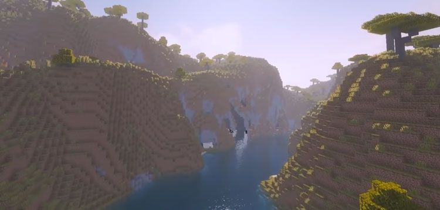

Información sobre Forge
Forge es un servidor de código abierto que te permite instalar y ejecutar todos los mods en Minecraft. Dicho programa ha sido diseñado para conectar las modificaciones complejas y los jugadores que no son programadores en Minecraft. Podrás instalarlo gratis en tu ordenador y ejecutar los mods que vas acumulando en el juego.
Forge es un programa que está diseñado por expertos. Esto indica que difícilmente presente algún tipo de error y a su vez las actualizaciones del software permiten tener un Forge disponible para las diversas versiones del juego.
Una de sus grandes ventajas es que puedes usarlo sin ser baneado. No obstante, debes tener en cuenta el tipo de servidor que uses para tener problemas.
Descargar Forge Minecraft es un proceso muy sencillo. No obstante, antes de hacerlo debes conocer la versión de su instalación en Minecraft. Para saber eso, tan sólo debes iniciar sesión en el juego y verificar la versión escrita que está en la esquina inferior izquierda de la pantalla.
¿Cómo Instalar Forge en Minecraft?
Después de conocer la versión del juego debes visitar el apartado Inicio. Allí, deberás seleccionar la versión compatible de tu juego buscándolo en la barra lateral izquierda. Seguidamente debes hacer clic en el botón instalador.Asi se iniciara la descarga.
Debido a que es un archivo .jar, el navegador puede arrojar alguna advertencia de ser dañino. Selecciona la opción conservar cuando se te solicite y despreocúpate porque Forge es un programa muy seguro.
Cuando haya finalizado la descarga de Forge haz doble clic para abrir el instalador. En caso que el antivirus indique una venta de más información, selecciona la opción ejecutar de todos modos.
Como segundo paso, Forge detectará la ubicación de la instalación predeterminada de Minecraft. Otra forma de instalarlo en el directorio de Minecraft es manualmente, haciendo clic en el botón que está al lado de la dirección de directorio predeterminado. Después de esto, debes seleccionar la opción instalar cliente y aceptar.
Seguidamente, espera a que Forge se descargue e instale en el juego. Cuando el proceso haya terminado, recibirás un mensaje de instalación exitosa. Lo que resta para asegurarse de que funciona correctamente es no utilizar una versión del juego que esté modificada y coincidir siempre la versión del juego con la versión de Minecraft.
